strange music page
japanese strange music * * * p-model pt.1
#P-MODELです、とっても好き....でした。
なんか過去形で書かなきゃいけないのはとても悲しいです、最近のリリースはどーしても納得いかなくって。
とりあえず、初期の3枚とKARKADOR、あと平沢ソロの最初3枚、他のどこにも有り得ない音です。
一応ここのページではP-MODEL名義のCDだけ。
平沢ソロとかはこっちp-model pt.2 (p-model arround)へ。
P-PLANT
|
- P-Model (1979-1987)
- P-Model (1992-1994)
- P-Model (1995-2000)
|
#１枚目。当時はプラスチックスとヒカシューと合わせてテクノ御三家と呼ばれていたらしいです。ただP-modelの場合はアルバム毎に方向性が違っていたりするので、実際テクノポップという言葉から想像されるイメージとはかなり離れているように思います。個人的には最高作だと思います、手法的には全く違うのですが前身バンドであるマンドレイクからの流れも感じます。
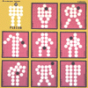
- 美術館で会った人だろ (art mania)
- HEALTH ANGEL
- ROOMRUNNER
- SOPHISTICATED
- 子供たちどうも (for kids)
- カメアリPOP
- SUNSHINE CITY
- 偉大なる頭脳 (the great brain)
- WHITE CIGARRETTS
- MOMO色トリック (pinky trick)
- ART BLIND
- 平沢進 (guitars,vocals)
- 田中靖美 (keyboards,synthesizers)
- 秋山勝彦 (bass,vocals)
- 田井中貞敏 (drums,percussions)
WARNER MUISC JAPAN: WPCL-603 (1979.8.25)
#基本的には1枚目の延長上みたいです、一曲目はイキナリ淡々としたストイックな曲ですけど。それ以降はパンクで仰々しいいかにも初期P-MODELな曲が続きます。
田中靖美さんのオルガンのトーンと平沢進さんのプログレっぽいギターが合わさると、なんだか初期XTCとかR.FrippがB.Andrewsとやってた頃のバンドみたいに聞こえます。
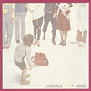
- オハヨウ
- ダイジョブ
- "LOVE" STORY
- DOCTOR STOP
- TOUCH ME
- ナ カ ヨ シ
- MISSILE
- LITTLE BOY
- I AM ONLY YOUR MODEL
- ONE WAY LOVE
- 異邦人
- 地球儀
- 平沢進 (guitars,keyboards,vocals)
- 田中靖美 (keyboards,piano,organs,synthesizers)
- 秋山勝彦 (bass,vocals)
- 田井中貞敏 (drums,percussions)
WARNER MUSIC JAPAN: WPCL-604 (original release 1980.4.25)
#bassの秋山勝彦が脱退して、平沢進がbassも弾いています。
ジャケがいきなりモノトーンになって、全体的に暗めのイメージになってます。よく「テクノポップを脱却した....」みたいな事を書かれてますが、基本的な作りは前作と変わらないように思います。
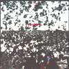
- ジャングルベッド I
- 青十字
- ジャングルベッド II
- ブループリント
- アクアライフ
- different =/= another
- ANOTHERSMELL
- フィルム
- モノクローム・スクリーン
- MARVEL
- ナチュラル
- いまわし電話
- ポプリ
- 平沢進 (guitars,bass,keyboards,vocals)
- 田中靖美 (keyboards,synthesizers,vocals)
- 田井中貞敏 (drums,percussions)
WARNER MUSIC JAPAN: WPCL-605 (1981.3.25)
#突然ヘヴィな音像になった4枚目。曲はシンプルになり、歌詞は抽象的なものになっています。
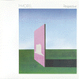
- Heaven
- 列車
- Zombi
- Coelacanth
- うわばみ
- Perspective
- Solid Air
- のこりギリギリ
- Perspective II
- 平沢進 (guitars,keyboards,vocals)
- 田中靖美 (keyboards,synthesizers)
- 田井中貞敏 (drums,percussions)
- 菊池達也 (bass)
JAPAN RECORDS: TKCA-70479 (1982.3.1)
#当時カセットで出ていたもののCD化、全曲ミックス違いで2曲(MERCATOR,BLUMCALE)のインスト曲が追加になっています。
- Heaven
- 列車
- Zombi
- Coelacanth
- うわばみ
- Mercator
- Perspective
- Solid air
- のこりギリギリ
- Perspective II
- Blumcale
WAX RECORDS: TKCA-30335
#遂に田中靖美さんが抜けて、オリジナルメンバーは平沢さんのみになってしまいます。後任のキーボードは三浦俊一(ex-
有頂天)です。
前作よりはややソフトになった印象が有ります、次のアルバムに繋がる独特な浮遊感も感じますけど。"BIKE"はS.Barrett時代のPINK FLOYDの曲のカバーです。
ちなみにこのアルバムは歌詞の問題でしばらく発売延期になった事で結構有名みたいですね。
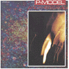
- ANOTHER GAME
- HOLLAND ELEMENT
- ATOM-SIBERIA
- PERSONAL PULSE
- フ ル ヘッ ヘッ ヘ
- BIKE
- HARM HARMONIZER
- MOUTH TO MOUTH
- FLOOR
- GOES ON GHOST
- ECHOES
- AWAKENING SLEEP -αclick
- 平沢進 (gutiars,keyboards,vocals)
- 田井中貞敏 (drums,percussions)
- 菊池達也 (bass)
- 三浦俊一 (keyboards,synthesizers,piano)
JAPAN RECORDS: TKCA-70480 (1984.2.25)
#一応P-Model名義でのリリースですが、平沢進さんがソロのつもりで作ったものらしく、この頃のP-MODELとはかなり違った音になっています。どちらかというと平沢ソロにつながるような歌中心の音です。最初はカセットのみでのリリース、その後にCD化。
#追記: よーやくCDで入手、吉祥寺のバナナレコードにて。その後Yahoo!オークションみたら\5000くらいの値段付いてやがるの、馬鹿みたい。別にいいけど。ちなみにバナナレコードでは\1,700でした。
久しぶりに聴いたんですけど、ピコピコがうざったい"recycled"よりやっぱこっちの方がスッキリしてて良いです。"スッキリして良い、ヘンな音楽"ってのもなんだかなな感じですけど。リズムの組み方とかR.Frippそのまんまなギターとか、平沢進の音楽のオイシイ所沢山でした。(2000.2.13)
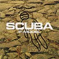
- FROZEN BEACH
- BOAT
- 七節男
- オハヨウII
- LOOPING OPPOSITION
- REM SLEEP
- FISH SONG
- SCUBA
- 平沢進
- 三浦俊一 (synthesizers)
- 神尾明郎 (synthesizers on 7.)
- Tsujitani Akemi (backing voice on 2.)
CAPTAIN RECORDS: CAP-1013-CD (1984.10.25)
#元
AFTER DINNER,
4-Dの横川理彦さんがメンバーに加わった6枚目。
ANOTHER GAMEからだと、とてもポップになったような印象ですが。なんかとても微妙なバランスの上に成立したポップさだと思います。平沢進と横川理彦の奇妙な調和点、違和感と無理矢理な説得力と。
好きな曲が多いです、横川さんの曲ですが7曲目"OAR"なんてスピード感の出し方なんてA.BLEWの時期のKING CRIMSONみたいで。
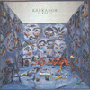
- KARKADOR
- オルガン山にて (on the organ-yama)
- ダンス素凡夫 (dance subomb)
- サイボーグ
- 1778-1985
- LEAK
- オール (oar)
- HOURGLASS
- PIPER
- KARCADOR
- 平沢進 (guitars,vocals)
- 横川理彦 (bass,violin,vocals)
- 三浦俊一 (keyboards,synthesizers)
- 荒木康弘 (drums,percussions)
ALFA MUSIC/EDGE RECORDS: ALCA-9134 (1985.10.25)
#もうこの頃になると平沢さんの歌い方とかも落ちついてきて、ソロ時代に直接繋がるような要素も見られます。またメンバーがガラっと変わっています。結構面白い曲もあるんですが、P-MODELとしてはちょっと行き詰まってるような印象があるのも確かです。
この後ことぶき光さんが加入、初期のドラマー田井中さんが戻ってきて「MONSTERS A GO GO」というアルバムの製作に入るはずですが、それはオクラ入りになってしまい、P-MODELは一時凍結へ。平沢さんはソロ作に専念、中野テルヲさんは元有頂天のケラさんのロング・バケーションへ加入、ことぶき光さんは解凍後のP-MODELに参加する事になります。
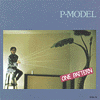
- OH MAMA !
- LICORICE LEAF
- ASTRO NOTES
- メビウスの帯 (moebius band)
- DRUMS
- ZEBRA
- おやすみDog
- ANOTHER DAY
- HARMONIUM
- SUNPALEETS
- 平沢進 (guitars,keyboards,vocals)
- 中野照夫 (bass,keyboards,vocals)
- 荒木康弘 (drums,percussions,gong)
- 高橋芳一 (systems)
ALFA MUSIC/EDGE RECORDS: ALCA-9135
#P-MODEL凍結前に出されたビデオ、"三界の人体地図"に未収録曲、偉大なる頭脳とATOM-SIBERIAを加えたもの。この時期は初期のドラムの田井中さんが戻ってきて、解凍後のP-MODELに参加することになることぶき光さんも参加。アルバム"ONE PATTERN"の曲をグシャグシャに崩したような演奏。
お蔵入りになったアルバム"MONSTER A GOGO"に収録されるはずだった曲なども収録されてます。どーしてこのメンツで完成してくれなかったのか、残念になるような出来の良い面白い曲なんですけど。
ちなみに田井中さん、後期の曲ではやっぱり収まりが悪いんですが、"偉大なる頭脳"とか、"ブループリント"なんて、水を得た魚のようなプレイ。かっちょいーです。
- FROZEN BEACH
- MONSTER A GO GO
- LICORICE LEAF
- フルヘッヘッヘ
- KARKADOR
- おやすみDOG
- CRUEL SEA
- FISH SONG
- CYBORG
- OH MAMA !
- ATOM-SIBERIA
- LEAK
- サンパリーツ
- 偉大なる頭脳
- ブループリント
- MONSTERS A GO GO
- コヨーテ
- ZEBRA
- 平沢進 (guitars,vocals)
- 田井中貞利 (drums)
- 中野テルヲ (bass,keyboards,vocals)
- ことぶき光 (keyboards)
DIW/SYUN: SYUN-016
#"解凍"後の1枚目。平沢進さんが「テクノポップ宣言」したらしく、彼のイメージでのテクノポップワールドが繰り広げられてます。他に類を見ないピコピコ音の洪水、しかも非常に独特(昔から普通な曲なんてやったことない人ではありますが)です。
最後の曲から数分後に"美術館で会った人だろ"の90年代解釈のような曲が入ってます、結局(自分は)こっちの音の方が好きなことを思い知りますが、それにしても良いアルバムです。
- SPEED TUBE
- 2D or not 2D
- STONE AGE !
- WIRE SELF
- CLEAR
- VISTA
- GRID
- LAB=01
- ERROR OF UNIVERSE
- GO AMIGO
- PSYCHOID
NO ROOM
POLYDOR: POCH-1128 (1992.2.26)
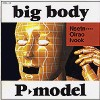
- CLUSTER
- CHEVRON
- BIIIG EYE
- BIG FOOT
- 次元歪曲漏斗管へようこそ
- JOURNY THROUGH YOUR BODY
- 幼形熟成BOX
- BURNING BRAIN
- BINARY GHOST
- HOMO GESTALT
POLYDOR: POCH-1195 (1993.3.25)
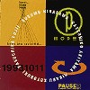
- BIASTECHNOLOGIST
- SOLID AIR
- SPEED TUBE
- CLUSTER
- 幼形成熟BOX
- フ・ル・ヘッ・ヘッ・ヘッ
- 時間等曲漏斗館へようこそ
- GRID
- WIRE SELF
- CHEVRON
- JOURNEY THROUGH YOUR BODY
- BIG FOOT
- 2D OR NOT 2D
- LAB=01
- ブループリント
- STONE AGE!
- ZEBRA
DIW/SYUN: SYUN-002 (1994.5.25)
#旧曲の90年版P-MODELのライヴ版アレンジを収録したアルバム、しかも演奏者側から聞いた用にミックスされています。ヘッドホンで聴くと位相がおかしくて面白いです。元々フツーじゃない曲をピコピコな感じにしたもので、P-MODELの普通のアルバムより更に違和感があります、一通り聴いている人向け。
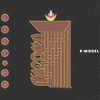
- Zebra
- 列車
- OH! MAMA
- HOLLAND ELEMENT
- おやすみDOG
- サイボーグ
- Heaven
- いまわし電話
- ATOM-SIBERIA
- LEAK
- 平沢進 (arrangement)
- ことぶき光 (arrangement)
DIW/SYUN: SYUN-003 (1994.7.23)
#一番最初はカセットブック、次に改訂されてCDになって、これで三度目の改訂になります、SCUBAです。いかにもな最近のシンセの音が入ってて、ちょっと違和感を感じました。なんか妙にアンビエントだったり、中途半端にチープな打ち込みだったりして。
最初に出たカセットに付いてた意味不明の夢の日記みたいがボリュームを増して復活してます。ほんとは元のSCUBAの方が良いと思うんですけど、カセットもCDも今となってはレアですし。しかもこのCDももう廃盤かな？
- BOAT
- REM SLEEP
- FISH SONG
- 七節男
- LOOPING OPPOSITION
- オハヨウII
- FROZEN BEACH
- SCUBA
- 平沢進 (recycled,guitars,synthesizers,vocals)
DIW/SYUN: SYUN-009 (1995.11.30)
#4Dの小西健司さんが入ってから最初のリリースがこれだった事を覚えてます、大喜びでディスクユニオン行って買ったことも。
んで、なんだかちょっとデジタルデジタルしてて違和感を持ったよーな。今はもう手元に無いです。
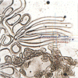
- tide
- saksit
- julia bird
- 3/4 march 4th
- welcome
- home
- fune
- 小西健司 (remixed,system-1)
- 福間創 (remixed,system-2)
- 平沢進 (guitars,synthesizers,vocals)
- 上領亘 (algorythm)
DIW/SYUN: SYUN-007 (1995.9.30)
#これは...
DIW/SYUNのdisk unionのキャンペーンで貰ったアナログ盤です。内容はSAKSITのミックスと11th Factという曲(?)です。DJの人向けかなー、よく分からないけど延々な内容。
- SAKSIT North Passage MIX
- 11th Fact
#元4Dの小西健司さんが加入、
改訂後の初のアルバム
ドラムは元グラスバレーの上領亘（ソフトバレエでも叩いてた）。あと一人は小西さんが誘ったという福間創さん。
CD買うときは結構期待してたんですけど.....音的には余り好みでは無かったです。電子音、分厚いです。
これなら生ドラムにしなくてもいいような感じも受けたりもしました。最後の小西さんのインストの小品は好きです。
- welcome
- 夢見る力に
- fune
- 残骸の船 saksit
- preparation
- julia bird
- tide
- ソリトン
- mirror image
- 3/4 march 4th
- home
- 平沢進 (guitars,synthesizers,vocals)
- 小西健司 (system-1)
- 福間創 (system-2)
- 上領亘 (algorythm)
Nippon Colombia: COCA-13083 (1995.12.9)
- Rocket Shoots
- http
- はじまりの日
- 平沢進 (guitars,vocals,synthesizers)
- 小西健司 (system-2)
- 福間創 (system-1)
- 上領亘 (algorhythm)
Nippon Colombia/TESLAKITE: COCA-13848 (1996.10.19)
- ASHURA CLOCK
- COLORS
- HIDDEN PROTOCOL
- 平沢進 (synthesizers,vocals,guitars)
- 福間創 (system-1)
- 小西健司 (system-2)
Nippon Colombia/TESLAKITE: COCA-14390 (1997.8.1)
- LAYER-GREEN
- BA-DA-DHA
- AFFIRMATION
- 平沢進 (synthesizers,vocals,guitars)
- 福間創 (system-1)
- 小西健司 (system-2)
Nippon Colombia/TESLAKITE: COCA-14391 (1997.8.30)
- ENOLA
- HIDDEN PROTOCOL (release 2)
- BOGY
- Rocket Shoot II
- ENN
- 衛星ALONE
- LAYER-GREEN (ver.1.05 Gold)
- Spiritus
- ASHURA CLOCK (Discommunicator)
- Black in White
- A Strange Fruit
- 平沢進 (vocals,guitars,synthesizers)
- 福間創 (system-1)
- 小西健司 (system-2)
Nippon Colombia/TESLAKITE: COCA-14673 (1997.11.29)
#P-MODEL or DIE....とか言ってほんとにこのアルバムを最後にして活動止めちゃいましたけど。
やっぱり音は好みじゃないです、なんだかやる気の無さそうな単調なシーケンスフレーズ。
ネット配信やmp3なんて本当はどーでも良くって、面白そーな曲が有ったらどんな手段でも取りに行くっつーの。
個人的には一番つまらないP-MODELのアルバム。昔の曲のフレーズなぞられても.....やる気無いのかな？
- 論理空軍
- ローレシア
- 回収船
- Moon Plant-II
- Heaven 2000
- Ancient Sounds
- Rehash
- Waste Cabaret
- Mind Scape
- DUSToidよ歩行は快適か?
- 平沢進 (vocals,guitars,synthesizers)
- 福間創 (system-1)
- 小西健司 (system-2)
MAGNET/TESLAKITE: MAGL-5002
#えーと、これはどう解釈すればいいんでしょうかねー？
P-Modelの1979の架空ライヴ...なんですすけど。平沢進って、こーゆー過去のライヴとか出すのを嫌うイメージが有ったんですけどね。曲目はすべて1枚目のもので、この頃の曲はとても好きなんで、やっぱ聴いててぐっとくるものはあります。
わかんないのは意図、最近のP-Modelは音的にはつまんないなーとは思ってたんですけど、昔の音に戻って欲しいとは思ってなくて。
この後VIRTUAL LIVEシリーズで2,3が出るみたいですけど。何をどうしたいんでしょうね、平沢進はどこへ行くんでしょうね？なんか「音楽産業廃棄物〜P-MODEL OR DIE」だそーで。
とりあえず、なまあたたかーい目で見守ってみます。個人的には。(1999.9.5)
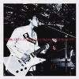
- ルームランナー
- サンシャイン・シティー
- MOMO色トリック
- ホワイト・シガレット
- 偉大なる頭脳
- KAMEARI POP
- 美術館で会った人だろ
- ヘルス・エンジェル
- 子供たちどうも
- アート・ブラインド
MAGNET/TESLAKITE: MAGL-5001 (1999.8)
#架空ライヴ、その2です。ランドセル編ですけど、フツーにスタジオに持ってる人にとっての価値は...?
まぁ今オリジナルが廃盤なんで。
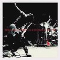
- ダイジョブ
- 「ラヴ」ストーリー
- ミサイル
- ナ・カ・ヨ・シ
- ドクター・ストップ
- 異邦人
- I AM ONLY YOUR MODEL
- ワンウェイ・ラヴ
- リトル・ボーイ
- オハヨウ
MAGNET/TESLAKITE: MAGL-5003
#その3、potpourriとPerspectiveです。
曲は好きなので、中途半端に出すなよと思ってしまう。
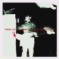
- ジャングルベッド I
- 列車
- ジャングルベッド II
- モノクローム・スクリーン
- 青十字
- Perspective II
- Perspective
- ブループリント
- potpourri (ポプリ)
- うわばみ
MAGNET/TESLAKITE: MAGL-5004